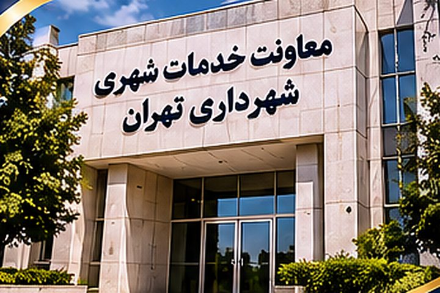
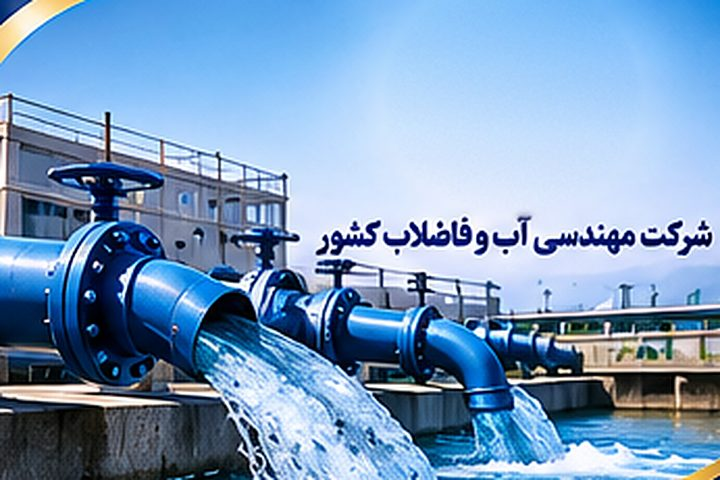
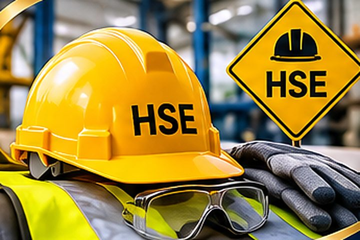
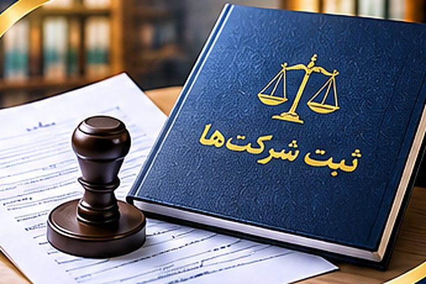
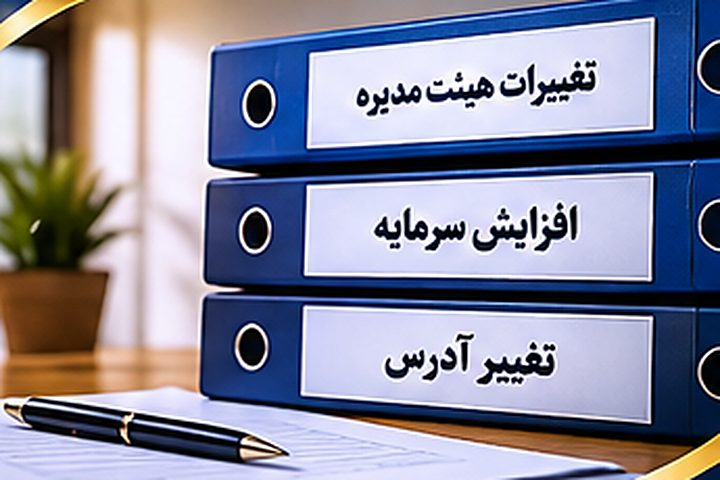
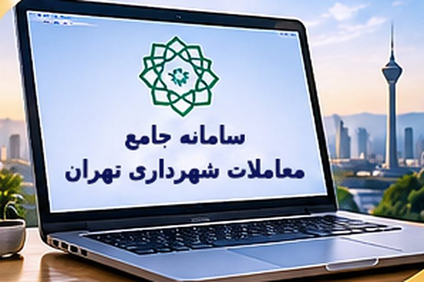
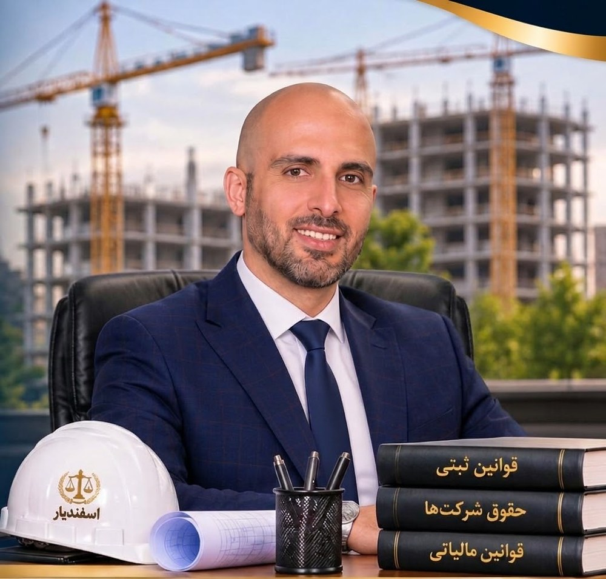

مسیر امور ثبتی و حقوقی کسبوکار شما، با اطمینان بیشتر
موسسه ثبتی و حقوقی اسفندیار آماده ارائه خدمات تخصصی در زمینه ثبت شرکت، تغییرات، اخذ رتبه و صلاحیتها، امور مالیاتی و خدمات مرتبط با کسبوکارهاست.
با مدیریت مهندس بخشی
خدمات موسسه اسفندیار
برای مشاهده جزئیات هر خدمت روی آن بزنید، یا برای بررسی شرایط پرونده با کارشناسان مجموعه تماس بگیرید.
اخذ و واگذاری رتبه پیمانکاری
پیگیری امور مرتبط با رتبهبندی شرکتهای پیمانکاری.
اطلاعات بیشترکارت الکترونیک شهرداری تهران
ارائه خدمات مرتبط با اخذ کارت الکترونیک شهرداری تهران.
اطلاعات بیشتر
رتبه معاونت خدمات شهری
پیگیری فرایند اخذ رتبه از معاونت خدمات شهری.
اطلاعات بیشتر
رتبه سازمان آب و فاضلاب کشور
خدمات مرتبط با اخذ رتبه سازمان آب و فاضلاب کشور.
اطلاعات بیشتر
گواهی صلاحیت ایمنی
راهنمایی و پیگیری امور دریافت گواهی صلاحیت ایمنی.
اطلاعات بیشترمجوز درگاه ملی مجوزها
پیگیری درخواستها و مجوزهای قابل ارائه از درگاه ملی مجوزها.
اطلاعات بیشتر
ثبت شرکت
انجام امور مربوط به تأسیس و ثبت انواع شرکتها.
اطلاعات بیشتر
ثبت تغییرات شرکت
پیگیری صورتجلسات و تغییرات ثبتی شرکتها.
اطلاعات بیشتر
ثبت صورتوضعیت
ثبت صورتوضعیت در سامانه معاملات.
اطلاعات بیشتراخذ و فعالسازی توکن
راهنمایی و خدمات مرتبط با توکن و امضای الکترونیک.
اطلاعات بیشترحسابرسی و امور مالیاتی
خدمات حسابرسی و پیگیری امور مالیاتی کسبوکارها.
اطلاعات بیشتربیمه تأمین اجتماعی
ارائه خدمات و پیگیری امور مرتبط با تأمین اجتماعی.
اطلاعات بیشترتأمین مهندس امتیازآور
معرفی و تأمین مهندس امتیازآور متناسب با شرایط پرونده.
اطلاعات بیشتر
تجربهای برخاسته از دل صنعت پیمانکاری
مهندس بخشی، با سابقه فعالیت در حوزه پیمانکاری و پروژههای عمرانی، مسیر حرفهای خود را با تجربه مستقیم در اجرای پروژهها و مواجهه با چالشهای مدیریتی و اداری شرکتهای پیمانکاری آغاز کرد.
از سال ۱۳۹۶، همزمان با فعالیت پیمانکاری، فعالیت حرفهای در حوزه ثبتی را آغاز کرد و امروز بیش از ۳۰۰ پروفایل ثابت از شرکتهای پیمانکار شهرداری را همراهی میکند.
ایشان در طول فعالیت حرفهای خود، همواره با مسائل و پیچیدگیهای مرتبط با امور ثبتی، حقوقی و مالیاتی شرکت روبهرو بوده و همین تجربه، زمینهساز ورود تخصصی ایشان به حوزه خدمات ثبتی و حقوقی شد. در ابتدا، این مسیر با هدف ساماندهی و پیگیری امور شرکت خود آغاز گردید؛ اما بهمرور، با کسب تجربه و شناخت عمیقتر از نیازهای شرکتها، این تخصص در راستای ارائه خدمات و همراهی با سایر مجموعههای فعال در بخش خصوصی گسترش یافت.
آنچه رویکرد حرفهای مهندس بخشی را متمایز میکند، نگاه ایشان از جایگاه یک پیمانکار به مسائل و دغدغههای سایر پیمانکاران است. آشنایی عملی با شرایط پروژهها، الزامات اداری، فرایندهای قانونی و چالشهای مالی و ثبتی شرکتها، این امکان را فراهم کرده است تا خدمات ارائهشده صرفاً محدود به انجام امور اداری نباشد، بلکه با درک واقعی از نیازها و منافع کارفرمایان و پیمانکاران همراه شود.
امروز، در مجموعه موسسه ثبتی و حقوقی اسفندیار، این تجربه و نگرش در قالب ارائه خدمات تخصصی ثبتی، حقوقی، مالیاتی و پشتیبانی امور پیمانکاری دنبال میشود؛ با این هدف که شرکتها بتوانند امور اداری و قانونی خود را با اطمینان، دقت و آگاهی بیشتری پیگیری کنند.
باور اصلی مهندس بخشی این است که یک پیمانکار، بیش از هر چیز به همراهی متخصص نیاز دارد که شرایط کاری و دغدغههای او را از نزدیک بشناسد.درخواست بررسی پرونده
فرایند ثبت درخواست
برای شروع، کافی است درخواست خود را برای ما ارسال کنید.
انتخاب خدمت
نوع خدمت موردنیاز خود را مشخص کنید.
ارسال درخواست
اطلاعات تماس و توضیح کوتاهی از پرونده را ارسال کنید.
مشاوره و پیگیری
برای بررسی شرایط و مراحل بعدی با شما تماس گرفته میشود.
پیش از اقدام بخوانید
راهنماهای کوتاه برای آشنایی با مراحل و مدارک رایج.
درخواست مشاوره و خدمات
برای دریافت راهنمایی، با ما تماس بگیرید یا فرم زیر را تکمیل کنید.
راههای ارتباطی
فرم درخواست مشاوره
با زدن دکمه، متن درخواست در واتساپ آماده ارسال میشود؛ ارسال نهایی را خودتان انجام میدهید.